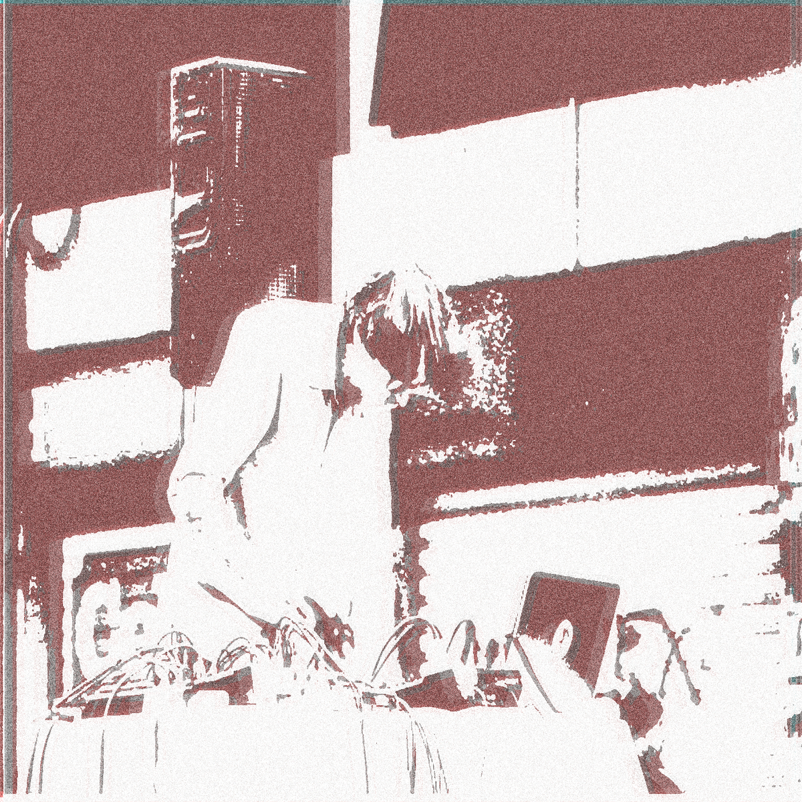
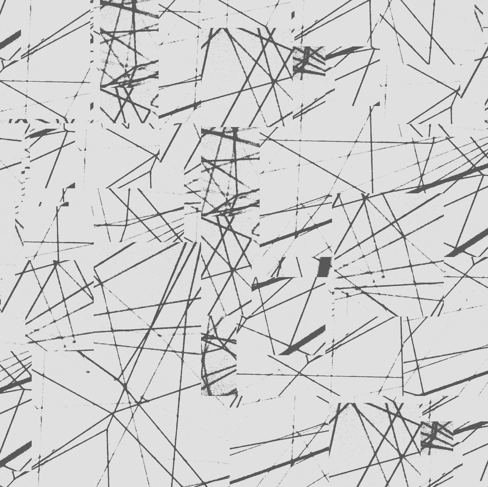
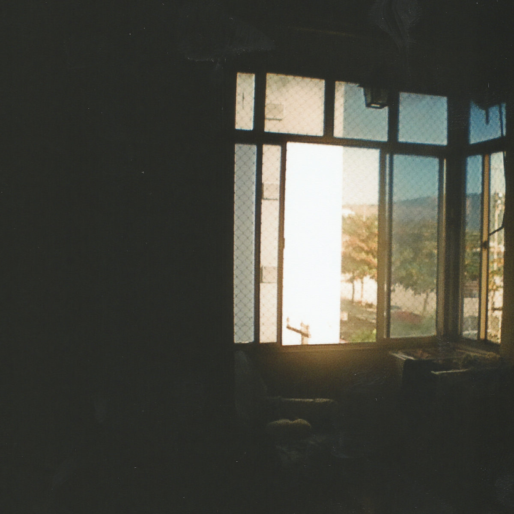
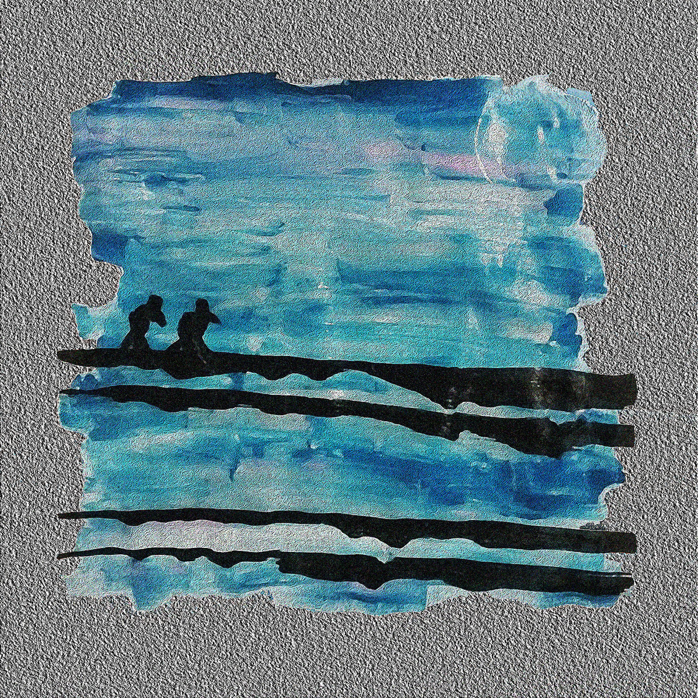

fefo . mus
Aqui você encontra gravações e links para projetos sonoros/musicais,
bem como para meus perfis em websites de compartilhamento de mídia.
O material varia entre peças isoladas a álbuns completos organizado por ordem cronológica.
Há performances solo, colaborações, gravações de campo, sistemas interativos, partituras abertas e peças eletrônicas.
As capas para composições/álbuns funcionam como links para minha página no bandcamp.
Divirta-se!
Here you can find recordings and links for sound/musical projects, as well as for my profiles in media sharing websites.
The material varies between isolated pieces and full albuns, and everything is in chronological order.
There are solo performances, collaborations, field recordings, interactive systems, open scores and electronic pieces.
By clicking on the images, you'll be redirected to my bandcamp page.
Enjoy!
PS: to read the page in English:

# Silêncio de Chão (2021)
Vídeo-performance em colaboração com o ensemble GILU
Silêncio de Chão conduz uma interpretação musical improvisada
de versos poéticos de Manoel de Barros, escolhidos a dedo por
sua musicalidade implícita, entrelaçando significados entre
palavras, imagens e sons em uma vídeo-performance de construção
coletiva, estreiada no III Colóquio Internacional Escrita, Som, Imagem.
A gravação do áudio foi realizada à distância, em tempo real,
com o auxílio de um programa de computador que sorteia, para
cada instrumentista, diferentes versos da obra de Manoel de
Barros, dentre os quais alguns foram selecionados e
interpretados visualmente nas filmagens que compõem o trabalho.
O sorteador de versos pode ser acessado clicando aqui.
# BRUTAL (2021)
Escultura interativa
Cimento, canudos biodegradáveis, borracha, epóxi,
potenciômetros, sensor ultrassônico, Arduino Nano e
SuperCollider

Inspirada pelo movimento arquitetônico brutalista, BRUTAL
procura beleza na simplicidade de seus materiais, desenho e
construção, servindo como objeto de controle para um
sintetizador igualmente descomplicado e versátil. O
trabalho valoriza uma interação intuitiva e funcional entre
movimentos e sons, que variam de senoides a espectros
complexos.
Realizada como residente no SomaRumor II - 2º Encontro
Latinoamericano de Arte Sonora. Para fotos e um
clipe de apresentação, clique aqui.
# engenhoca (2021)
Máquina improvisadora

engenhoca é um protótipo de máquina criativa capaz de
improvisar duos com musicistas em tempo real.
O projeto foi realizado como TCC em Música e pretende-se como uma
inspiração a pesquisas educacionais na área, estando disponível
como software livre.
Para baixar o patch e gravações com engenhoca, clique aqui.
# welcomeBach (2020)
Sua dose diária de contraponto
Script python para sorteio diário de peças ainda não escutadas do catálogo
de obras de um compositor.
Pensado inicialmente para escutar todo o BWV de forma consistente, o projeto
cresceu e inclui catálogos de outros compositores, sendo possível importar mais a
partir de páginas da wikipedia ou IMLSP.
Acesse aqui. Contribuições são bem
vindas!
# emersão (2020), 8'

Paisagem sonora
À medida em que se chega mais perto da superfície, mergulhadores escutam sons se transmutando...
Dezembro 2019
# PING (2019), 15'
Vídeo-jogo controlado por improvisos musicais
Elaborado com Caio Campos
(YouTube)
Inspirado no clássico "Pong" da ATARI, PING é um vídeo-jogo controlado por musicistas que utilizam seus instrumentos no lugar de manetes (ou raquetes).
Como no original, PING é uma competição entre dois lados, mas aqui, esses lados se invertem, multiplicam, expandem e contraem, como quicam pela tela...
interagindo com melodias, intensidades e ritmos do improviso musical.
A disputa por pontos serve como estímulo para experimentação e expressividade musical, ao mesmo tempo em que diferentes fases e respostas sonoras se
comportam de maneiras inesperadas, perturbando a lógica do jogo e tecendo mais camadas na interação entre os musicistas e o sistema.
# ágora (2019)
Jogo para ensemble de improvisação
Inspirada na instituição grega símbolo da democracia ateniense, ágora convida musicistas a uma assembleia musical em que há liberdade para se discutir qualquer assunto, desde que todos os participantes tenham espaço para que sua voz seja escutada.
A peça foi escrita em Outubro de 2019 e estreiada pelo ensemble Sonante 21 no mesmo mês, em concerto sob regência de Stephan Froleyks, em um projeto que envolveu partituras escritas em somente um dia e de no máximo uma página.
A gravação a seguir é uma realização pelo ensemble GILU, em concerto no 1º FIM: Festival Improvisada Música, em Novembro de 2019.
Partitura
# decampo (2019), 6'
Gravações de campo selecionadas
Escuta do espaço entre um piu daqui e um vrum de lá.
Gravado em Vitória e em Belo Horizonte.
Janeiro - Março 2019
# bifurcações (2018), 7'
Flauta e live-electronics
Escuta-se uma música aguda e como que silábica no vaivém do vento, turvada de folhas e distância.
Nesse jardim imaginário, o tempo se bifurcará perpetuamente para inumeráveis futuros, revelando caminhos espelhados.
Ainda que tudo seja decidido no momento, sempre será possível escutar o passado.
Inspirada pelo conto El Jardín de senderos que se bifurcan, de Jorge Luis Borges.
Estreiada por Rodrigo Frade na Galeria da EBA-UFMG.
Dezembro 2018
Versão reduzida para estéreo:
# praçaseis (2018), 46'

Música de ruído em praça pública
Solo e duo improvisado com Quasicrystal na Praça Sete (BH), como parte da série "Praça 6".
Tocado com o SBOX (manete mapeada como instrumento digital), um piezo e pedais de guitarra.
Gravação e foto de capa por Henrique Iwao.
Quasicrystal é Sanannda Acácia.
Junho 2018
# dysgraphia (2018), 3'

Acusmática defeituosa
Sons acústicos e sintetizados associam escrita manual, digitação, manipulação de objetos e falhas em dispositivos eletrônicos,
buscando coerência poética em meio à imperfeição.
Março 2018
# maestRandom (2017), 10'
Sorteador de diretrizes musicais para improviso em grupo
Pensado para performance com o ensemble GILU. Palavras-chave são sorteadas em intervalos de tempo aleatórios, coordenando o improviso com certa imprevisibilidade. Ao mesmo tempo, grupos instrumentais são sorteados a cada minuto para executar as ideias. As palavras foram sugeridas pelos participantes do grupo.
# cadaeco (2016), 24'

Paisagens do caos e do aconchego
de uma caverna urbana
Sobreposição de sons cotidianos e improvisos instrumentais. Com participação de Luís Israel em "chamada perdida".
Gravado com um smartphone.
Foto de capa por Arthur Moreira.
Julho - Dezembro 2015
# quatrocordas (2015), 5'

Quatro improvisos curtos com um violão
deficiente de duas cordas
Gravado com o microfone do computador.
Capa em aquarela sobre papel
e edição digital.
Maio 2015